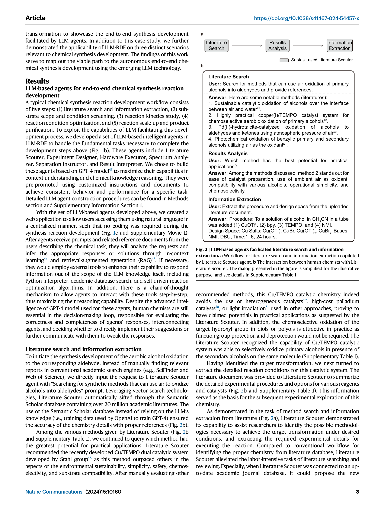
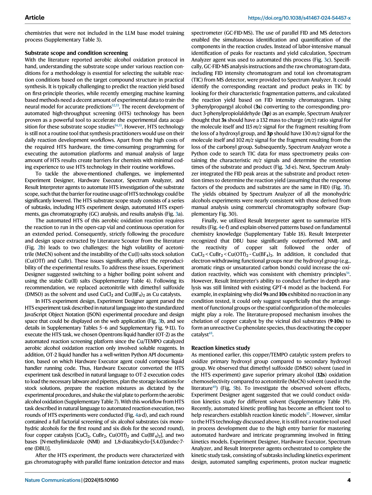
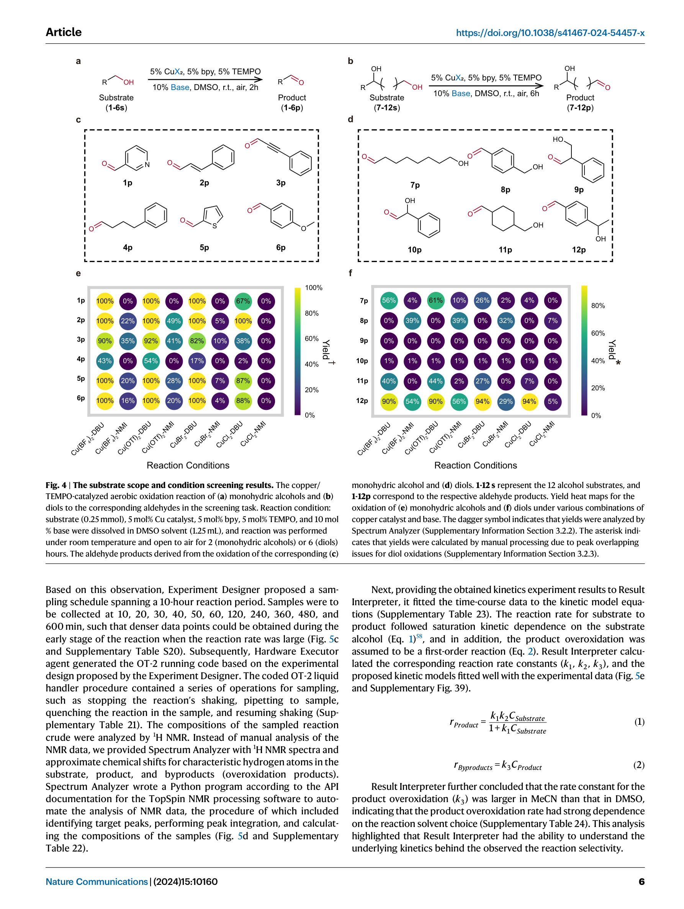
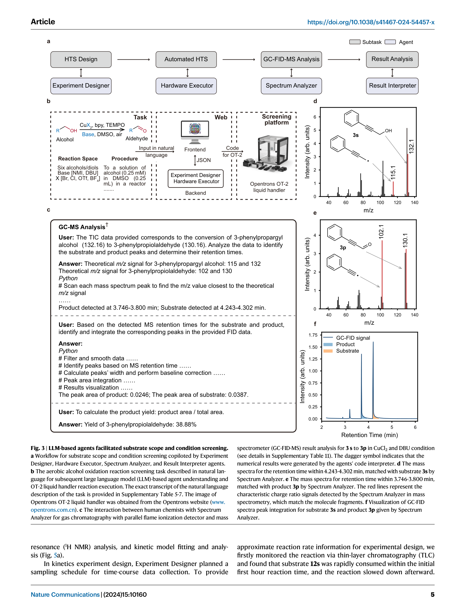

Figure 1
Figure 1
GPT-4 기반의 6개 전문 LLM 에이전트로 구성된 LLM-RDF(LLM-based Reaction Development Framework)를 개발하여, 화학 합성 개발의 전 과정을 자연어 인터페이스로 수행할 수 있는 end-to-end 플랫폼을 구현했다. 문헌 검색부터 기질 범위 스크리닝, 반응 동역학 연구, 조건 최적화, 스케일업, 생성물 정제까지 합성 개발의 5단계를 LLM 에이전트가 보조하며, 화학자가 코딩 없이 자연어만으로 자동화 실험 장비와 상호작용할 수 있게 했다.

Figure 2

Figure 3

Figure 4

Figure 5
LLM-RDF는 LLM 에이전트가 화학 합성 개발의 실질적 파트너가 될 수 있음을 Nature Communications 수준에서 실증한 중요한 연구다. 특히 자연어 인터페이스를 통해 코딩 경험 없는 화학자도 자동화 실험 장비를 활용할 수 있게 한 점은 실용적 가치가 크다. 6개 에이전트가 각각 문헌 검색, 실험 설계, 장비 제어, 스펙트럼 분석, 분리 최적화, 결과 해석이라는 명확한 역할을 수행하며, Cu/TEMPO 산화 반응에서 실제로 915mg의 고순도 생성물을 얻어낸 것은 설득력 있는 시연이다. 다만 GPT-4의 심층 화학 지식 부족(메커니즘 해석 실패), 안전성을 위한 인간 검증 필수, 폐쇄형 모델 의존성은 분명한 한계다. 향후 도메인 특화 LLM과 에이전트 간 자율 통신이 결합되면, 진정한 자율적 합성 개발 플랫폼으로 진화할 잠재력이 있다.